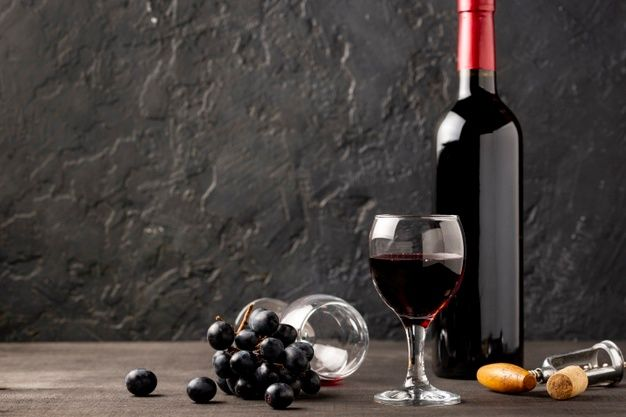
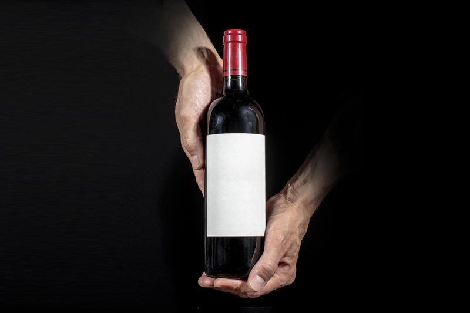

Producción y variedades
Nuestra principal cosecha de uva es la del Cabernet Sauvignon. Este varietal es amable y persistente en paladar, esta compuesto por un intenso color rubí y sus aromas varían entre frutos negros, chocolate, especias y habano. Para este varietal contamos con la línea Pavon y la línea Vazquez, ambas elaboraciones cuentan con vinos de reserva, ya que pasan por barrica de roble americano.
La segunda cosecha mas grande que tenemos es la de uva Merlot. Este varietal es conocido por su gran presencia y su delicada expresión. Presenta un color rojo intenso, su aroma es especiado y podemos encontrar tambien aromas tostados. En boca este vino es untuoso, tiene taninos delicados y se puede saborear higos y habano. Para este varietal contamos con la línea Heredia, que en simples palabras, es en honor a la madre de Pavón, dueño de la finca.
Por último, nos encontramos con la cosecha mas especial de la bodega y la que menos se produce, que es de una uva de origen frances, llamada Carmenere. Este varital se produce en suelos arenosos, con presencia de piedras y un buen drenaje natural. Sus aromas son exóticos de frutos del bosque, regaliz y pimienta negra. Para este varietal, contamos con la línea Pavon Heredia Premium.
Línea Pavon Cabernet Sauvignon: Esta línea empezó a elaborarse en 1995, siendo asi la primera producción de vino de esta bodega. El vino Pavon empezó a lanzarse al mercado al rededor de 1997, teniendo un gran éxito a nivel nacional e internacional. Tres años mas tarde, iba a lanzarse la primera producción añeja de esta uva, tomando el legado de "Gran Reserva" y este nombre es debido a que el vino de esta produccion se almacenó en barrica de roble americano durante 2 años.
Línea Vazquez Cabernet Sauvignon: Esta línea es la mas moderna de la bodega, empezó a elaborarse en 2021 y resumidamente es la versión mejorada de Pavon Cabernet Sauvignon. Repite casi el mismo proceso que la línea anterior, la unica diferencia es que este vino tiene otro proceso de fermentación. En este caso, encontramos un vino mucho mas dulce ya que el proceso de fortificacion se detiene mucho antes, logrando asi que menos azúcares se conviertan en alcohol y por ende quede mas azúcar residual en el vino. Está linea todavia no se lanzó al mercado.
Línea Heredia Merlot: Esta línea empezó a elaborarse en 2005 en conmemoracion a los 10 años de la fundacion de la finca, y el nombre refiere a la madre de Santiago Pavon, actual dueño. Este vino obtuvo el premio ganador al "Mejor vino de uva Merlot de América Latina" en el año 2010, y en modo de celebracion del premio obtenido, la finca decidio lanzar una línea especial. Esta linea no iba a lanzarse al mercado, solamente iba a pertenecer al mercado local de la bodega. La única manera de obtenerlo era visitando la finca. Al día de hoy, siguen habiendo vinos de esta cosecha especial.
Línea Pavon Heredia Premium Carmenere: Esta línea extremadamente especial se elabora hace aproximadamente 5 años, y no se lanza al mercado nacional. Para obtenerlo, se necesita visitar la finca y abonar la degustacion premium. Al dia de hoy, obtuvo tres premios nacionales y dos internacionales. Estos dos ultimos son al "Mejor vino de uva Carmenere del mundo" y "Mejor vino del mundo", ambos premios obtenidos en la exposición enóloga de Zurich, Suiza, en 2021.
